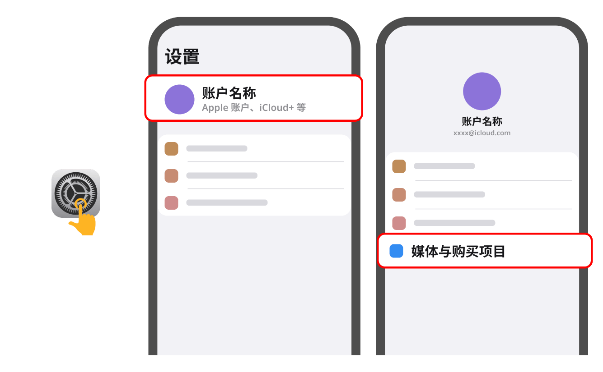
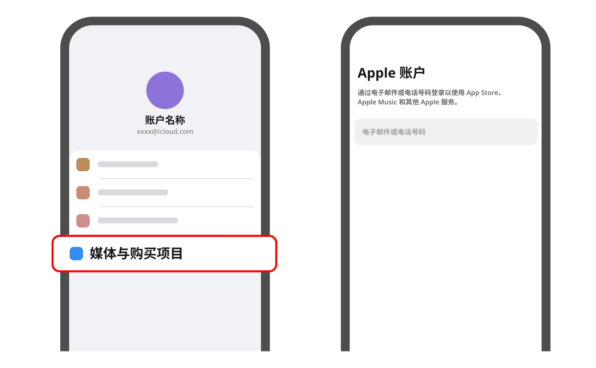

使用公开账号下载
注意1
千万别在 iCloud 页面和设置页面登录!这会导致您的App Store 和 iTunes Store 被停用 或 锁定，最严重会导致“手机会变砖”

注意2
若提示需要 电话号码验证，代表您操作错误，请仔细查看教程的第三步与第四步

第一步:前往 <设置>，退出现在的 Apple ID
1. 打开 <设置>，点击最上方 Apple 账户，千万不要在这里操作账户，避免被锁
2. 点击 <媒体与购买项目>，退出现在的Apple ID
3. 选择 <退出登录>

第二步:登录 <公共的 Apple ID>
1. 再次点击 <媒体与购买项目>，不登入原账户
2. 点击下方按钮获取

第三步:
登录ID后，会弹出AppleID安全页面，切记，请点击<其他选项>若没有此提示请忽略；

第四步:
在弹出的弹窗中选择<不升级>，若没有此提示请忽略;

第五步:
最后一步:
下载完成后，前往 <设置>，进入
千万不要忘记登出公共 ID，长时间登录有风险